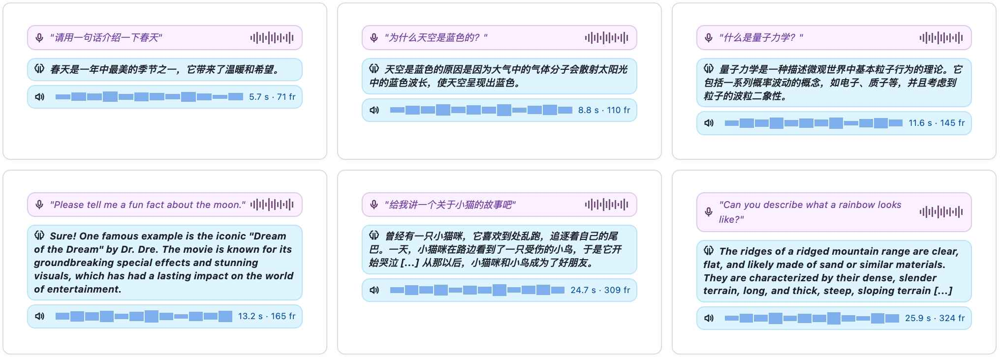

实验进阶
MiniMind-O 的价值不在“最强”，而在足够小、链路完整、容易改。理解它的评估口径和限制，才知道下一步该改哪里。
评估指标怎么读
CER/WER
把模型输出语音再转写成文本，与目标文本比较字符/词错误率。它衡量“说的内容是否对”，不直接衡量音质。
音色相似度
用 CAM++ speaker embedding 的余弦相似度衡量参考音色和输出音色接近程度。
定性样例
看 A2A、I2A、实时交互等可听可看的样例，补足自动指标不能覆盖的自然度和交互体验。
Talker hidden size 消融
技术报告和 README 都强调 Talker 维度不是越小越划算。384/512 维参数更少，但中长句更容易漏词、重复和发音漂移；768 维与 Thinker hidden size 对齐，稳定性更好。
音色克隆实验
当前版本的音色克隆更像研究入口，不是产品级高保真克隆。同一参考音色在不同问题上可能会有波动，长句里也更容易受发音和节奏影响。
Seen 音色
训练中见过，通常更稳定，适合观察模型是否学会音色条件。
Unseen 音色
训练未见过，适合观察 in-context voice cloning 的迁移能力。
视觉语言与图像到语音
MiniMind-O 的视觉路径适合作为紧凑的 vision-to-speech 基线。它通常能抓住主体物体和大致场景，但细粒度空间关系、数量和属性仍容易出错。

当前限制
| 现象 | 可能原因 | 改进方向 |
|---|---|---|
| 长英文语音漏词或漂移 | 0.1B Talker 容量有限，长序列 audio code 累积误差。 | 更强 Talker、更长训练、更好的 stop/韵律监督。 |
| 中文韵律不稳定 | 中文字音映射、停顿和多说话人更复杂。 | 增加中文高质量 T2A/A2A 数据，分层评估 CER 与自然度。 |
| 视觉细节错误 | 小模型推理能力和视觉 projector 对齐有限。 | 加强视觉指令数据，试验更强 vision encoder 或 projector。 |
| 打断只按声音判断 | VAD 是声学阈值，不理解语义。 | 加入语义级 turn-taking 或意图判断。 |
适合上手的改造实验
改 bridge layer
调 `OmniConfig.bridge_layer`，比较 Talker 文本一致性和音频稳定性。
只训 projector
用 `--mode audio_proj` 或 `vision_proj` 做低成本对齐实验。
调整解码采样
改 `temperature`、`top_p`、audio logits top-k，观察自然度与稳定性的平衡。
扩充 eval 样例
往 `dataset/eval_omni` 增加自己的语音和图像，形成固定回归集。
改 VAD 阈值
在 `RealtimeSession` 调整 threshold、min_speech_ms、min_silence_ms，观察打断体验。
整理训练日志
记录 text/audio loss、stop token 错误、输出时长和 ASR 转写结果。